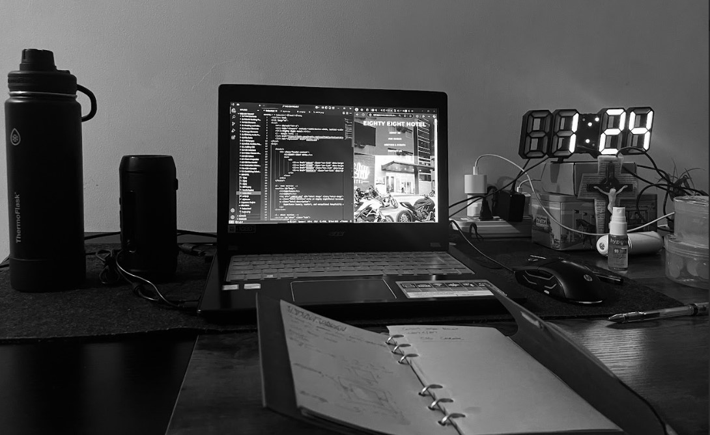

Front-End Developer | Software Developer
I'm Emman, a Tech Support Engineer transitioning to Developer/Web Developer. Passionate about building innovative digital solutions with a strong eye for design and user experience. I specialize in creating modern, responsive, and visually stunning websites using HTML, CSS, and JavaScript.
Modern web technologies that allow me to build interactive and beautiful websites.
Ensuring that websites work seamlessly across all devices and screen sizes.
Designing user-friendly and visually appealing web interfaces to improve user experience.
Enhancing website speed and performance through techniques like lazy loading, caching, and minification.

Web development is more than just coding for me—it's about crafting meaningful digital experiences. I'm dedicated to continuous learning and improving my craft to build high-quality, interactive, and accessible websites.